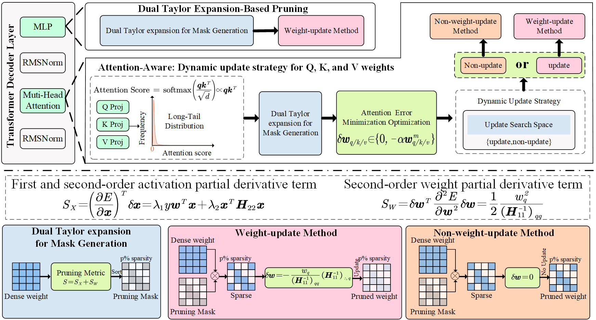
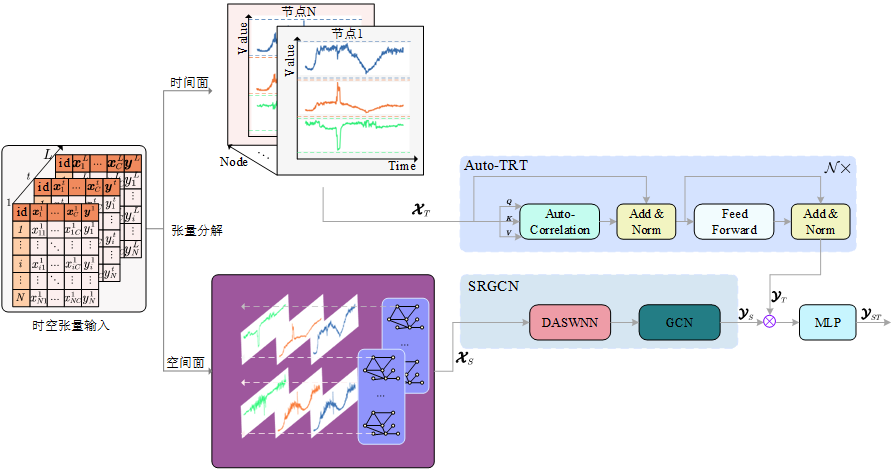
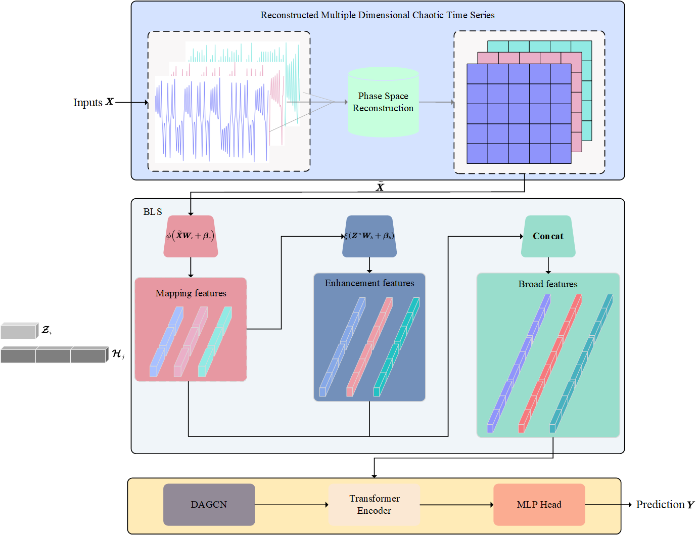

01
Large Model Compression大模型压缩
Pruning, sparse optimization, calibration-aware error estimation, and attention distribution preservation for efficient LLM deployment.面向高效 LLM 部署的剪枝、稀疏优化、校准感知误差估计与注意力分布保持。
I am Lang Xiong, a Ph.D. student in Computer Science and Technology at Chongqing University. My work focuses on large model compression and acceleration, AI infrastructure, and spatio-temporal big data modeling. 我是熊浪，重庆大学计算机科学与技术博士研究生。我的研究关注大模型压缩与加速、AI 基础设施，以及面向交通预测和复杂时间序列的时空大数据建模。
My research is driven by a practical question: how can large-scale models become smaller, faster, and more reliable without losing the structure of the data they learn from? 我的研究围绕一个实际问题展开：如何在保留模型能力与数据结构信息的同时，让大规模模型更小、更快、更可靠地部署。
Pruning, sparse optimization, calibration-aware error estimation, and attention distribution preservation for efficient LLM deployment.面向高效 LLM 部署的剪枝、稀疏优化、校准感知误差估计与注意力分布保持。
Unified compression and acceleration methods that make intelligent systems practical under compute, memory, and latency constraints.在算力、内存与时延约束下，研究统一的模型压缩与推理加速方法。
Graph convolution, Transformer architectures, and statistical structure for traffic forecasting and multi-dimensional time-series modeling.结合图卷积、Transformer 与空间统计结构，建模交通流和多维复杂时间序列。
Representative papers spanning efficient LLMs and spatio-temporal modeling. Each item includes paper, PDF, code, and BibTeX links when available. 覆盖高效大模型与时空建模的代表性论文。每篇论文尽量补充 Paper、PDF、Code 与 BibTeX 信息。

AAAI 2026Lang Xiong, Ning Liu, Ao Ren, Yuheng Bai, Haining Fang, Binyan Zhang, Zhe Jiang, Yujuan Tan, Duo Liu. Proceedings of the AAAI Conference on Artificial Intelligence, 40(32), 27171-27179.
@article{xiong2026d2prune,
title={D2 Prune: Sparsifying Large Language Models via Dual Taylor Expansion and Attention Distribution Awareness},
author={Xiong, Lang and Liu, Ning and Ren, Ao and Bai, Yuheng and Fang, Haining and Zhang, Binyan and Jiang, Zhe and Tan, Yujuan and Liu, Duo},
journal={Proceedings of the AAAI Conference on Artificial Intelligence},
volume={40},
number={32},
pages={27171--27179},
year={2026},
doi={10.1609/aaai.v40i32.39932}
}

CIS 2024Lang Xiong, Liyun Su, Shiyi Zeng, Xiangjing Li, Tong Wang, Feng Zhao. Complex & Intelligent Systems, 10, 7943-7964.
@article{xiong2024gstrgct,
title={Generalized spatial-temporal regression graph convolutional transformer for traffic forecasting},
author={Xiong, Lang and Su, Liyun and Zeng, Shiyi and Li, Xiangjing and Wang, Tong and Zhao, Feng},
journal={Complex & Intelligent Systems},
volume={10},
pages={7943--7964},
year={2024},
doi={10.1007/s40747-024-01578-x}
}

ASOC 2024Lang Xiong, Liyun Su, Xiaoyi Wang, Chunquan Pan. Applied Soft Computing, 157, 111516.
@article{Xiong2024DynamicAG,
title={Dynamic adaptive graph convolutional transformer with broad learning system for multi-dimensional chaotic time series prediction},
author={Xiong, Lang and Su, Liyun and Wang, Xiaoyi and Pan, Chunquan},
journal={Applied Soft Computing},
volume={157},
pages={111516},
year={2024},
doi={10.1016/j.asoc.2024.111516}
}
Selected repositories connecting paper implementations, efficient AI systems, and research tooling.精选论文代码、高效 AI 系统与科研工具相关仓库。
Official PyTorch implementation for the AAAI 2026 LLM pruning framework.AAAI 2026 大模型剪枝框架的官方 PyTorch 实现。
Unified compression and acceleration toolkit for edge intelligence.面向边缘智能的统一压缩与加速工具。
Traffic forecasting code for generalized spatial-temporal regression graph convolutional Transformer.广义时空回归图卷积 Transformer 交通预测代码。
Dynamic graph convolutional Transformer with broad learning for chaotic time series.结合动态图卷积、Transformer 与宽度学习的混沌时间序列预测代码。
Curated reading lists for LLM pruning, quantization, LoRA, and resource-efficient models.大模型剪枝、量化、LoRA 与资源高效模型的论文与资源列表。
A developer tool for switching Codex CLI profiles and improving AI research workflows.用于切换 Codex CLI 配置并改善 AI 科研工作流的开发工具。
Selected academic and project updates.论文、代码与个人主页相关动态。
The site now includes bilingual content, publication links, project entries, and a downloadable CV.主页已加入中英文切换、论文链接、项目入口与 CV 下载。
The paper studies dual Taylor expansion and attention distribution awareness for sparse LLMs.论文研究面向稀疏 LLM 的双重 Taylor 展开与注意力分布感知剪枝。
The work formulates traffic forecasting as generalized spatial-temporal regression.该工作将交通预测建模为广义时空回归问题。
The model combines phase-space reconstruction, broad learning, dynamic graph convolution, and Transformer encoding.模型结合相空间重构、宽度学习、动态图卷积与 Transformer 编码。
A concise view of my current academic identity and work direction.当前学术身份与研究方向概览。
Ph.D. student in Computer Science and Technology, with research interests in AI infrastructure and LLM compression.计算机科学与技术博士研究生，研究方向包括 AI 基础设施与大模型压缩。
Working across efficient AI systems, model compression, acceleration, and spatio-temporal big data research.持续开展高效 AI 系统、模型压缩加速与时空大数据研究。
For papers, code, and project updates, the fastest entry points are GitHub and Google Scholar.论文、代码和项目动态可以通过 GitHub 与 Google Scholar 快速了解。